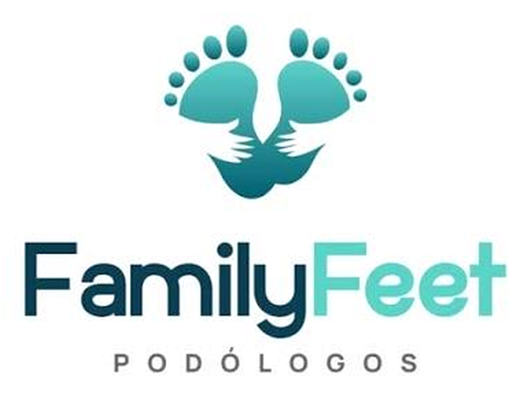

Quiropodia
Eliminación de callosidades, durezas y ojos de gallo, y corte higiénico de uñas para aliviar el dolor al caminar.
Más informaciónEn Family Feet ofrecemos atención podológica clínica, preventiva y especializada, con valoración individual, material esterilizado y un trato cercano en cada visita.

Atención segura
Cita previa
Somos un equipo de profesionales de la podología dedicado a prevenir, diagnosticar y tratar las afecciones del pie. Combinamos conocimiento clínico y un trato humano para que cada paciente se sienta acompañado.
Atendemos a niños, adultos, deportistas y adultos mayores, con planes de cuidado adaptados a la condición y al estilo de vida de cada persona.
Conocer más sobre nosotrosDesde el cuidado preventivo hasta el manejo de afecciones específicas del pie.
Eliminación de callosidades, durezas y ojos de gallo, y corte higiénico de uñas para aliviar el dolor al caminar.
Más informaciónAlivio de la onicocriptosis mediante técnicas conservadoras, con orientación sobre otras opciones cuando el caso lo requiere.
Más informaciónValoración y manejo de onicomicosis, pie de atleta y otras micosis, con pautas de higiene para evitar recaídas.
Más informaciónRevisión periódica de piel, sensibilidad y circulación, y educación para prevenir heridas y complicaciones.
Más informaciónDiseño de soportes personalizados que corrigen apoyos, distribuyen presiones y reducen el dolor.
Más informaciónPrevención y tratamiento de ampollas, sobrecargas y lesiones por impacto en corredores y deportistas.
Más informaciónTe escuchamos y te explicamos cada paso del tratamiento.
Instrumental esterilizado y superficies desinfectadas.
Tratamientos adaptados a tu condición y a tu rutina diaria.
Atendemos con cita previa para respetar tu tiempo.
Escríbenos por WhatsApp y elige el horario que mejor te convenga.
Revisamos tus pies, tu historial y el motivo de tu consulta.
Aplicamos el procedimiento indicado de forma segura y cómoda.
Te damos recomendaciones de cuidado y programamos tu revisión.
Atendemos con cita previa.
Escríbenos por WhatsApp y agenda tu valoración.